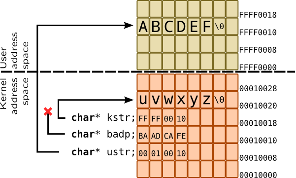

Pointers
Pointer is a special variable in C language that points (references) to a some data in memory, thus pointer usually contains address of that data. It is a common way to keep complex data structures in dynamically allocated memory, and pass a pointer between functions or share data among them by using same pointers at all consumers. SystemTap supports pointers in DWARF variables, but for locals it treats them as long. DTrace simulates full support of pointers, arrays and even dynamic allocation of them. To create a pointer you can use & operator like you do in C.
Things in kernel get complicated because some pointers point to a user address space which is not trivially accessible, so instead of dereferencing it special function is called to copy data in or out. For example, when application issues open() system call, it keeps pathname argument as a string located in user address space, and passes only pointer to an argument. Moreover, some pointers may be invalid, and dereferencing them may cause system fault. So instead of working with raw pointers, dynamic tracing languages provide set of interfaces. In the following example, badp is bad pointer, which points nowhere, kstr points to a data in kernel address space, while ustr references string in user address space:

Accessing a data in kernel address space in DTrace is performed by simple dereferencing it in C-style. For example, fop_open() function accepts pointer to pointer to vnode_t, so to get actual address of vnode_t, you need to dereference it:
# dtrace -n '
fbt::fop_open:entry {
printf("0x%p", (uintptr_t) *args[0]); }'
User address space may be read in DTrace by using copyin, copyinstr or copyinstr subroutines, or be overwritten with copyout/copyoutstr (requires destructive actions to be allowed). For example, poll system call accepts array of fds, which are located in userspace and should be copied into address space of script before being printed:
# dtrace -n '
this struct pollfd* fd0;
syscall::pollsys:entry
/arg1 != 0/
{
this->fd0 = copyin(arg0, sizeof(struct pollfd));
printf("%s: poll %d\n", execname, this->fd0->fd); }'
SystemTap allows to access kernel and user memory through set of functions which are implemented in tapsets conversions.stp and conversions-guru.stp. They also allow to specify different types such as ulong or int16, but they silently convert their result to long or string
-
kernel_<type>reads kernel memory. For example,vfs_writecall changes file position, thus it gets position as pointer to astruct filemember or a stack variable. To trace it, we have to dereference it:
# stap -e ' probe kernel.function("vfs_write").return { off = kernel_long($pos); printf("write: off=%d\n", off); }' -
set_kernel_<type>writes kernel memory if Guru-mode is enabled
-
user_<type>reads userspace memory
-
kread()used for safely reading kernel space in Embedded C
Summarizing all that, we should use following to read or write first character of strings in example above:
kptr |
badp |
uptr |
||
| DTrace | read |
*((char*) arg0) |
*((char*) arg0) |
*((char*) copyin(arg0, 1)) |
| write | Use copyout (see below) | |||
| SystemTap | read |
kernel_char($kptr) |
kernel_char($badp) with try-catch block |
user_char($uptr) |
| write |
set_kernel_char($kptr, 'M') |
set_kernel_char($badp, 'M') with try-catch block |
||
Example for copyout:
this->c = (char*) alloca(1); *this->c = 'M'; copyout(this->c, arg0, 1);
Safety notes
To avoid system panicking, before actually accessing memory through raw pointer, DTrace and SystemTap have to:
-
Check correctness of userspace pointer by comparing it with base address
-
Check correctness of address by comparing it to a forbidden segments (such as OpenFirmware locations in SPARC).
-
Add extra checks to page fault interrupt handlers (in case of DTrace) or temporarily disable pagefaults (SystemTap)
If you access to incorrect address, DTrace will warn you, but continue execution:dtrace: error on enabled probe ID 1 (ID 1: dtrace:::BEGIN): invalid address (0x4)
in action #1 at DIF offset 16
SystemTap prints similiar message and then fail:ERROR: kernel string copy fault at 0x0000000000000001 near identifier
'kernel_string' at /usr/share/systemtap/tapset/conversions.stp:18:10
References